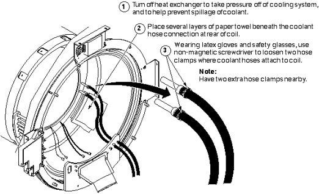

Illustration 4: DISCONNECTING COOLING SYSTEM: STEPS 1–3

| NOTE: | Four hands are better than two - While it is possible for one person to disconnect the coolant hoses at the rear of the body coil, it is easier if two people do it, and there is less chance of spilling the coolant. |